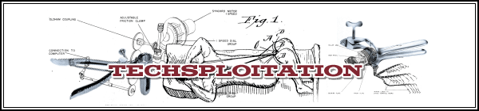

Ever wonder how Battlestar Galactica gets away with so much frakkin’ cursing? Adult Swim has the answer.
Fun fact: those are the real voices of the actors, except for Admiral Adama.
Ever wonder how Battlestar Galactica gets away with so much frakkin’ cursing? Adult Swim has the answer.
Fun fact: those are the real voices of the actors, except for Admiral Adama.

There’s no screwball in football, but there’s plenty of football in this screwball comedy.
George Clooney’s Leatherheads is, appropriately enough, a real kick, a return to the jaunty, wisecracking romps of the ’30s and ’40s. George Clooney is the equivalent of the football triple threat, a player who can – say – run, pass, and kick.
As Hollywood’s version, he’s a multi-hyphenate, someone who gets his kicks acting, writing, producing, and/or directing.
This is Clooney’s directorial follow-up to 2005’s Good Night, and Good Luck. Oh, it won’t be the same kind of Academy Award player. Hey, Good Night, and Good Luck received six – count ’em: six – Oscar nominations, including one for Best Picture, and writing and directing nods for Clooney. But Leatherheads, fueled by Clooney’s fondness for the screwball genre, is both warmly nostalgic and richly entertaining.
It’s a retro tribute to football in 1925, when the college game packed fans in while the professional game – with its nonexistent rulebook and freewheeling style – remained an under-attended afterthought. (How times have changed!)

By the time English truly is a dominant language on the planet, it will no longer be English. Instead, say a group of linguists interviewed in a recent article by Michael Erard in New Scientist, the language will fragment into many mutually-unintelligible dialects. Still, some underlying documents will supply the grammatical glue for these diverse Englishes, the way Koranic Arabic does for the world’s diverse Arabic spinoff tongues. English-speakers of the future will be united in their understanding of a standard English supplied by technical manuals and Internet media.

 Taken in Hong Kong
Taken in Hong Kong People like me, native English speakers, are heading to the ashcan of history. By 2010, estimates language researcher David Graddol, two billion people on the planet will be communicating in English – but only 350 million will be native speakers. By 2020, native speakers will have diminished to 300 million. My American English, which I grew up speaking in an accent that matched what I heard on National Public Radio and 60 Minutes, is already difficult for many English-speakers to understand.
Hence the rise of Internet English. This is the simple English of technical manuals and message boards – full of slang and technical terminology, but surprisingly free of strange idioms. It’s usually also free of the more cumbersome and weird aspects of English grammar.
Today marks the 40th anniversary of Dr. Martin Luther King, Jr.’s assassination. In honor of his legacy, the City of Austin is hosting an event that will include procession with city officials, music, and passes given to the first 500 guests for free food and games.
Does anyone else think it’s weird that the City of Austin Solid Waste Services is in charge of this? I know it’s because King died the day before he was going to lead a protest for sanitation workers’ safety in Memphis, but still…
5pm–8pm | FREE
Millennium Youth Entertainment Complex
1156 Hargrave St. • Austin, TX 78702
Only one more week to go until The Office is back – it’s so close yet so far. Here’s a little something to keep you going while you try to weather the excruciating wait.


Recent comments